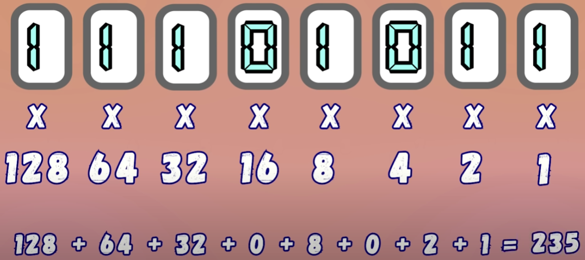
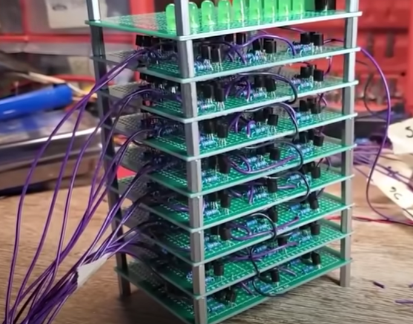

История развития компьютеров
От механических устройств до современных процессоров
Изобретатель первого компьютера
Чарльз Бэббидж
Чарльз Бэббидж считается изобретателем, который разработал проект механического устройства, которое можно назвать первым компьютером.
В 1822 году он выпустил счётную машину, которую с большой натяжкой можно назвать компьютером.
Аналитическая машина Бэббиджа была полностью механической и работала без электричества. Устройство состояло из зубчатых колёс, реек и другой механики. Для ввода данных и указания порядка вычислений машина использовала перфокарты, заимствованные у жаккардового ткацкого станка.

ENIAC - первый полноценный компьютер
Первый полноценный компьютер в мире создали в 1945 году в США.
Устройство называлось ENIAC (Electronic Numerical Integrator and Calculator) и предназначалось для расчёта артиллерийских таблиц. Проект разработали учёные Джон Моучли и Джон Эккерт, а собрали компьютер в условиях строгой секретности.
Компьютеры первого поколения (1946–1958)
Характеристики
- Габариты: машины занимали целые здания, вес исчислялся десятками тонн.
- Быстродействие: не превышало 2–3 тысяч операций в секунду.
- Ёмкость оперативной памяти: порядка 2048 машинных слов.
- Ввод данных: использовались перфоленты и перфокарты.

Примеры машин
- ENIAC (1946 год) — первая электронная вычислительная машина, созданная в США. Содержала 18 тысяч электронных ламп, выполняла около 5 тысяч операций сложения и 300 операций умножения в секунду.
- UNIVAC I (1951 год) — первый компьютер, предназначенный для коммерческого использования. Мог обрабатывать как цифровую, так и символьную информацию.
- МЭСМ и БЭСМ — вычислительные машины, созданные в СССР в начале 50-х годов под руководством академика С. А. Лебедева.
Транзисторы и компьютеры второго поколения
Революция транзисторов
Транзисторы заменили электронные лампы, что сделало системы меньше, быстрее и надёжнее.
В компьютерах второго поколения, появившихся в конце 1950-х и 1960-х годах, использовались печатные платы, заполненные отдельными транзисторами и память на магнитных сердечниках.
Эти машины оставались основным типом до конца 1960-х годов, когда начали появляться интегральные схемы, что привело к созданию компьютеров третьего поколения.
Принцип работы транзистора
- Транзистор — это управляемый изолятор, который может проводить ток в зависимости от напряжения на затворе.
- MOSFET-транзистор состоит из двух фрагментов полупроводника одного типа, внедрённых в полупроводник другого типа.
- Вертикальное поле притягивает электроны к верхнему контакту, превращая область P типа в N тип, что позволяет току течь.

Логические схемы и двоичная система
Логические схемы
- Схема "И": лампочка горит, если оба транзистора в состоянии «1».
- Схема "ИЛИ": лампочка горит, если хотя бы один транзистор в состоянии «1».
- Схема "НЕ" (инвертор): включённая лампочка соответствует выключенному транзистору и наоборот.
- Комбинирование схем позволяет создавать более сложные логические элементы. Например, сложить два числа, как на схеме ниже:


Двоичная система и арифметика
- В компьютерных системах числа записываются через степени двойки.
- Пример перевода числа 235 в двоичную систему: 11101011. 
- Бинарный сумматор автоматически складывает два двоичных числа — это первый шаг к созданию калькулятора.
- Из полных сумматоров можно собрать калькулятор для сложения чисел любой длины. 

Транзисторы и современные компьютеры
Современные компьютеры используют миллиарды транзисторов. Джек Килби создал интегральную схему (ИС) — компактное устройство, содержащее такие электронные компоненты, как транзисторы, резисторы и конденсаторы.
В 1971 году Intel представила свой первый микропроцессор — чип 4004. Этот микропроцессор содержал 2300 транзисторов и обеспечивал вычислительную мощность, аналогичную мощности громоздкого ENIAC.

Учёные ищут способы заменить транзисторы более компактными и энергоэффективными элементами.
Чарльз Бэббидж создает свою разностную машину
Создание ENIAC - первого электронного компьютера

Появление UNIVAC I - первого коммерческого компьютера

Переход на транзисторы - второе поколение компьютеров

Появление интегральных схем - третье поколение компьютеров

Появление персональных компьютеров схем - четвертое поколение компьютеров